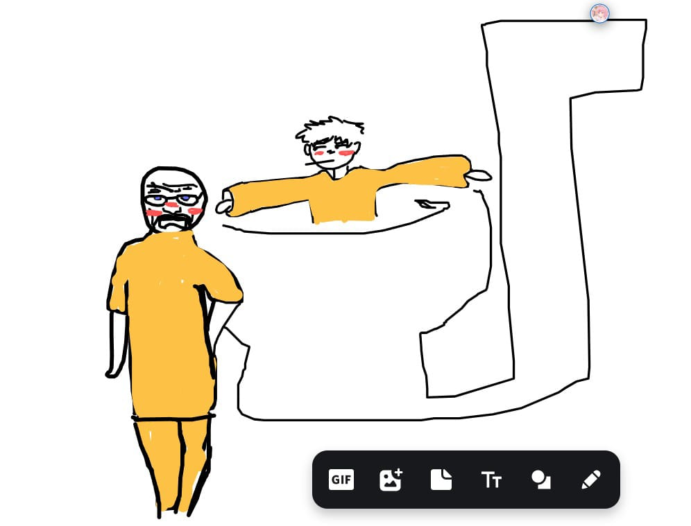
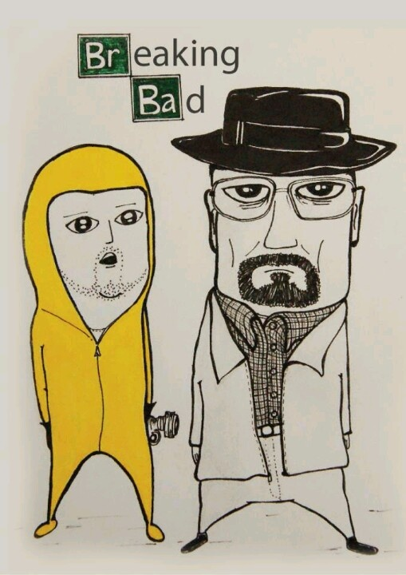
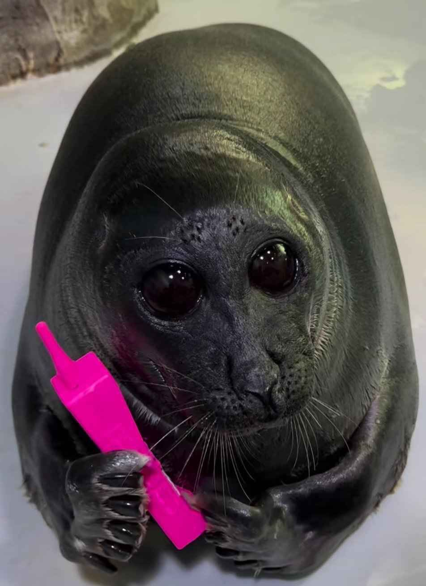
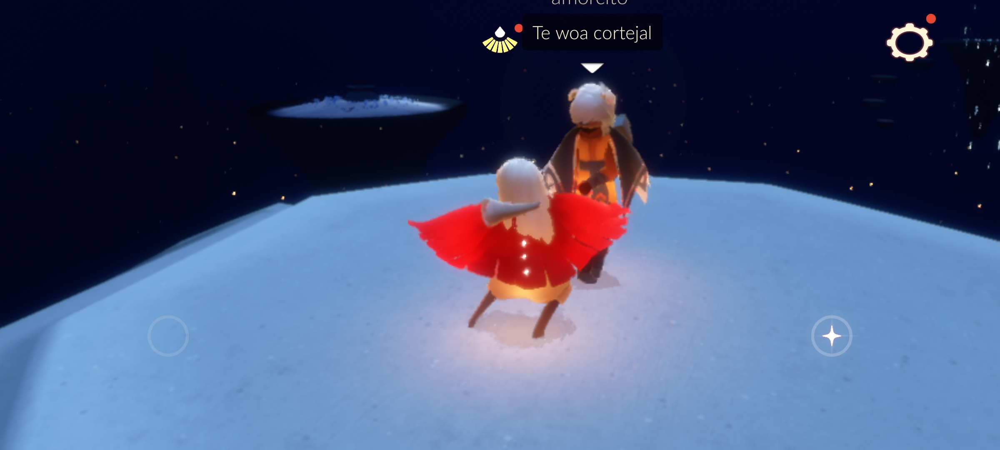
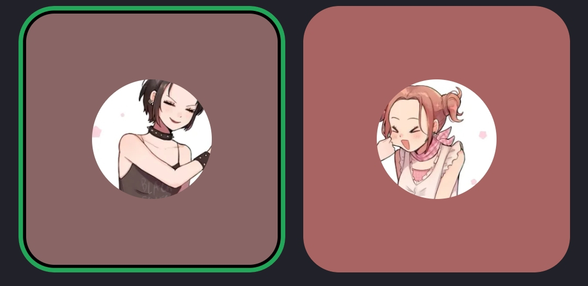
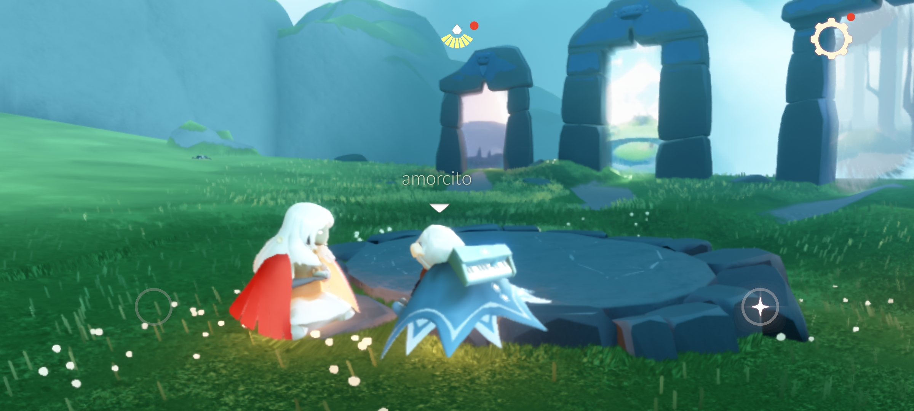
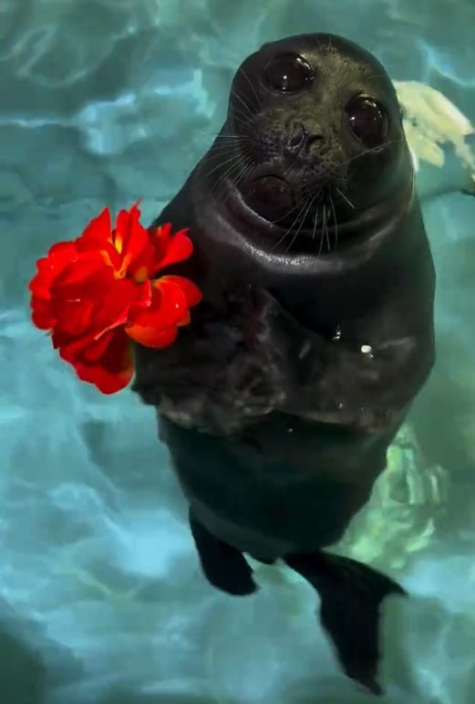
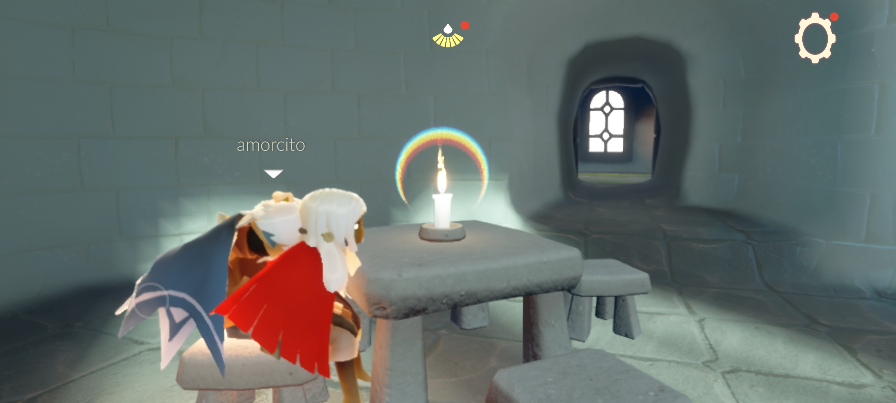
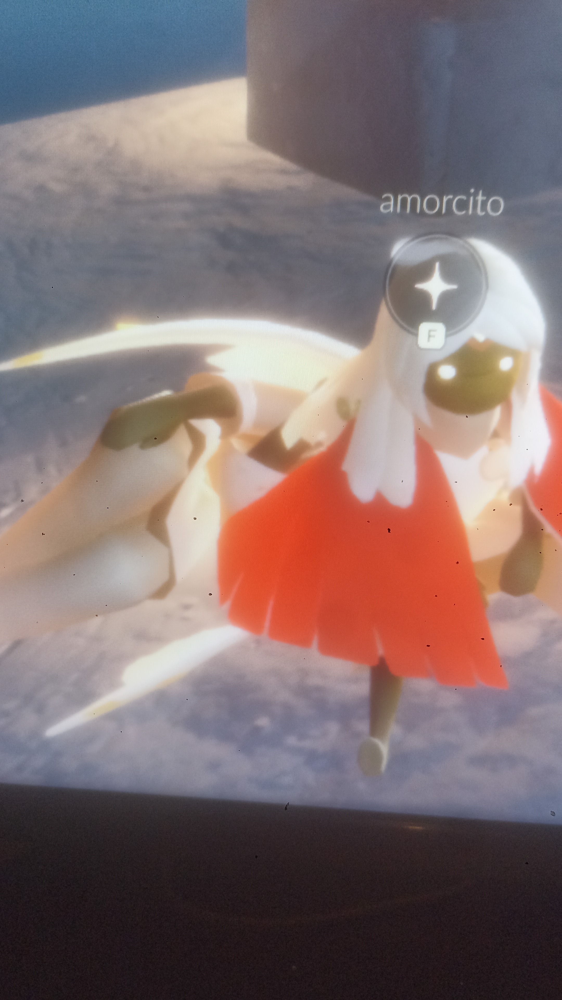

Tú y yo ❤️

Estas son pequeñas muestras de nuestro amor a distancia.







Gracias por estos 5 meses tan bonitos 💙
Cada llamada, risa y llanto a tu lado vale la pena. Eres mi mundo.
Te amo mucho, ¡vamos por más meses juntos!